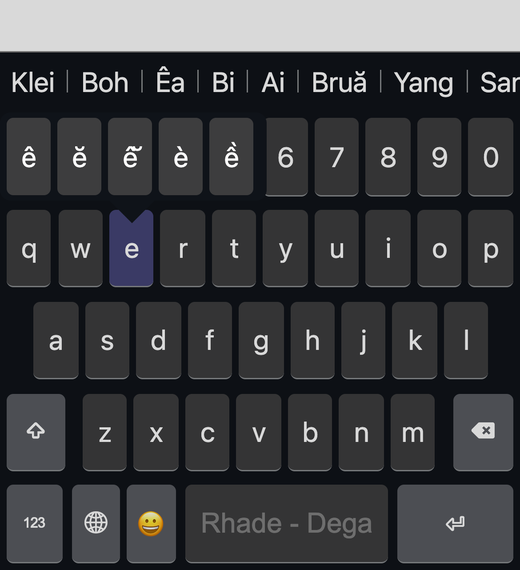

Dega is a free keyboard for the indigenous languages of Vietnam's Central Highlands, including Rhade (Êđê), Jarai, Koho, Bahnar and Mnong.
Type the plain letter, then a second key to add the mark. Hold Shift for capitals.
Type x at the end of the word and the breve goes on the last vowel: ananx → anăn, srangx → srăng.
Press the same key once more to undo a change: seee → see, booo k → book, addd → add, boxx → box.
Swapped letters are fixed as you type: suiah → suaih. Correct words are never changed.
Long-press a letter to see its Ede forms. Tap 😀 for emoji and 🌐 to switch keyboards.

For Rhade word suggestions, also install Ede (Rhade) Dictionary Suggestions in the Keyman app.
Hold Right Alt (Mac: Right Option) + a key for Ede letters: A â, Q ă, E ê, W ĕ, O ô, R ŏ, P ơ, U ư, T ŭ, I ĭ, D đ, B ƀ, C č, N ñ.
Press Shift once for one capital letter.
Press Shift twice for all capitals. Press it again to return.
© 2021-2026 MSFJ · Y Phič Hđơ̆k